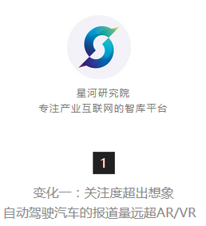
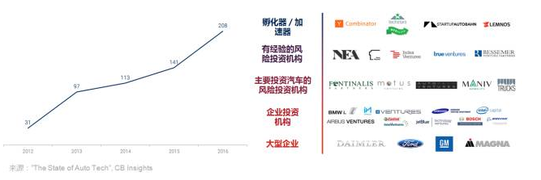

无人驾驶热度已超过了AR/VR，但这只是汽车科技变化的冰山一角【星河研究院】
2017-07-04来源：星河研究院
- 
- 自动驾驶汽车，又被称为无人驾驶汽车，这个词越来越多的被提及。通过CB Insights的趋势工具量化关于“自动驾驶汽车”或“无人驾驶汽车”的媒体报道，我们看到从2017年开始，数量已经超过了无人机或AR/VR。
- 虽然Google的自动驾驶汽车（现在是Alphabet公司旗下的Waymo）是最早开始的项目之一，但越来越多的初创企业也开始加入到自动驾驶的技术研发中来。
- 通过私募市场的投融资活动我们可以看到，汽车科技领域初创企业的融资数量直线上升，在2016年达到了三位数。主要是GM 2016年3月收购Cruise（加上2014年Mobileye的上市，以及其他几个大型车载通讯公司的退出活动）而引起的热潮。按照这个速度，预计2017年的融资数量会打破去年的记录。
- 截止到目前，汽车科技领域逐步趋于成熟。种子阶段的项目数量虽然仍占最大的比例，但由于十年前的初创企业目前已经到了中后期，因此各个阶段的融资数量趋于平衡。
- 汽车科技的关注程度提高也吸引了更多的支持者，投资者数量自2012年开始持续增长。而且投资者的类型越来越多元化，以智慧城市和硬件为主的投资者纷纷涌现，企业风险投资部门（CVC）占了绝大多数，包括汽车制造商和供应商、航空航天企业和百半导体厂商。
- 
- 许多创业公司和大型企业正在努力转变上个世纪的运输模式，从独立拥有和运营车队到共享的自动驾驶汽车、按需服务。这个愿景包含的一个内涵是汽车也将从内燃机转变为电动汽车。
- 已经有缩写词来描述这种未来汽车科技的各种技术融合了，例如ACES（autonomous, connected,electrified, and shared vehicles，自动驾驶、联网、电气化和共享）。当然这些技术领域都有初创企业在奋斗。然而，这些领域需要的能力是不同的，从工业制造到机器学习和计算机视觉算法等专业知识。所以看到初创企业和大企业联合研发并不是什么奇怪的事情。

- 这个领域的玩家通过很多模式来达到最终的电动无人驾驶出租车（robotaxi）服务：
- ①合作
- 初创企业与汽车OEM厂商、供应商和科技公司等大型企业之间已经有了协作的伙伴关系和网络。多方合作伙伴关系也日益普及，例如百度与Bosch和Continental，宝马－英特尔－Mobileye的合作，又加入了Delphi。许多自动驾驶系统开发商，例如Waymo，正在明确寻找多个OEM合作伙伴。Lyft也在公开兜售其开源平台为了开展自动驾驶的技术合作。
- ②投资并购
- 与上述相关的是直接投资的数量在扩大，例如GM 5亿美元投资Lyft，以及10亿美元收购Cruise Automation；Uber收购自动驾驶货车公司Otto。我们也看到了更富创造性的投资架构，例如福特10亿美元投资Argo AI，以便能吸引更多的人工智能专家。
- ③垂直整合
- 公司正在大力开发完整的电动无人驾驶汽车的解决方案。特斯拉就希望其电动汽车与自己的自动驾驶软件和Tesla Network的共享乘车服务能结合在一起。Alphabet拥有的Waze在加州推出了拼车功能，虽然与共享乘车有所不同，但仍然引起了人们的猜测，该技术将来可能与Waymo的自动驾驶汽车协同。
- 许多著名的工程师离开谷歌和特斯拉之后都在创业或在初创企业工作，因此由前谷歌和特斯拉的自动驾驶部门创建的“家族树”持续增长（下图）。Robotaxi初创公司Voyage有一个特别有趣的起源故事：其CEO Oliver Cameron是教育独角兽Udacity的VP，负责无人驾驶的课程，而Udacity则由DARPA Challenge和谷歌汽车的连续创业者Sebastian Thrun所创立。
- 当然，这也导致了偷取知识产权行为的法律诉讼，例如Waymo针对Uber的诉讼，这也直接导致Otto联合创始人和前任工程师Anthony Levandowski的离职。争议的核心是Waymo专有的LiDAR（激光雷达）传感器设计。
- LiDAR本身也是一个有争议的话题，因为像Waymo这样的企业将昂贵的传感器作为自动驾驶平台的一个不可缺少的部分。而像特斯拉这样的企业却认为LiDAR不是必要的设备。特斯拉和其他的初创企业，例如AImotive、Starsky Robotics和AutoX正在开发基于摄像头的系统，他们认为可以比基于LiDAR的自动驾驶系统更快速和／或更廉价的投放。
- 而这只是自动驾驶领域争论的一小部分，是首先从车队部署还是直接面向消费者销售、是过渡到自动驾驶还是越过部分自动化直接到自动驾驶等问题也是争论的主要话题。
- 更广泛的看，LiDAR也是未来自动驾驶生态系统中提供价值的重要组成部分。目前的LiDAR传感器主要是由Velodyne公司生产的（福特和百度在2016年向其投资1.5亿美元），但制造成本复杂且昂贵。虽然如此，这些传感器仍然在以创纪录的速度被订购，导致交付时间延长至数月。
- 许多创业公司也希望能在自动驾驶传感器和感知设备的巨大蛋糕中分一杯羹。其中许多都希望改进现有的LiDAR技术和／或大幅降低成本，如独角兽Quanergy。还有的初创公司正在开发替代品，如Oryx Vision的纳米天线系统和Chronocam先进的CMOS摄像头传感器。
- 传感器和视觉技术仅仅是汽车供应链面临的主要价值转变的一个例子。自动驾驶的技术也推动了诸如车对车／车对任何事物（V2V / V2X）通信硬件、高清晰度映射、半导体等领域的投资并购活动。
- 在制造业中，3D打印在消费级全面失败，但在像建筑这样的工业领域复苏。汽车也不例外，制造商在工业快速成型和金属加工的3D打印领域也频频进行战略投资。混合现实（Mixed Reality）技术也被用于车辆开发过程中，以节省时间和成本。
- 混合现实技术是虚拟现实技术的进一步发展，该技术通过在现实场景呈现虚拟场景信息，在现实世界、虚拟世界和用户之间搭起一个交互反馈的信息回路，以增强用户体验的真实感。
- 零售初创企业在中国这个飞速发展的市场也有所增长，由于中国二手车市场还不太规范，初创企业都在搭建在线平台和点对点交易模式。零售商也在尝试AR / VR技术，这可以很好的与线上购买协同，进一步减少对实体零售的需求（尽管经销商仍然收到许多法规保护）。
- 汽车科技、电气化和共享乘车的进步会带来更清洁、无所有权的自动驾驶时代。但技术的进步也需要汽车设计和文化的根本变化。特别是美国，共享模式可能与个人通勤模式和偏好相对较低的个人车辆设计相冲突。
- 特别是在密集的城市中心，大型汽车（例如无人驾驶公共汽车和摆渡车）可能需要加入小型汽车来达到对交通模式和道路密度的预期影响。广泛连接的自动驾驶汽车也将给上个世纪以驾驶员为中心的设计范式提供重新思考的机会。专为车队服务而设计的车辆也是一个可能的发展方向。
- 开源汽车公司OSVehicle将推出全球首款模块化自动驾驶汽车Edit，其可拆分为五大部分，因此用户可根据自身需求装配汽车，像这样的模块化平台对于自动驾驶汽车和车队发展早期要求的灵活性设计可能至关重要。
- 除乘客车辆外，许多其他创业公司都希望能提升货运、公共交通、航空旅行等现状。